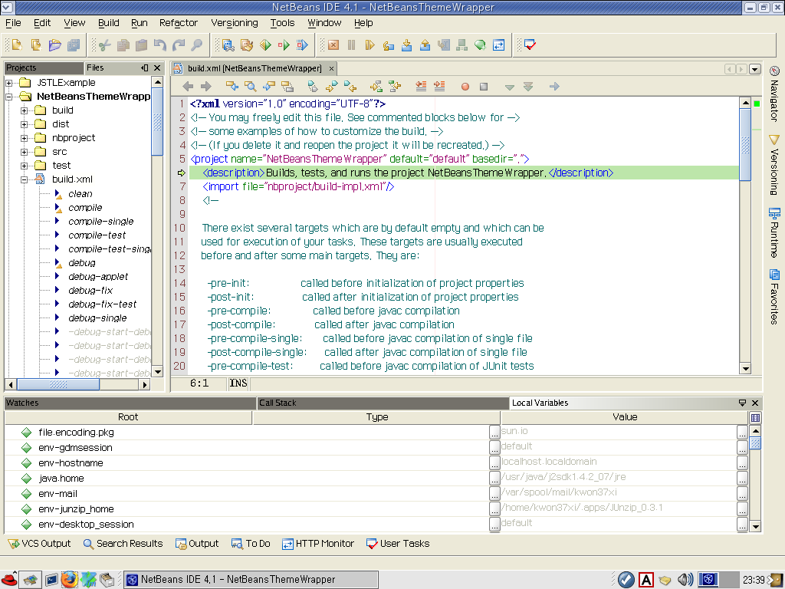
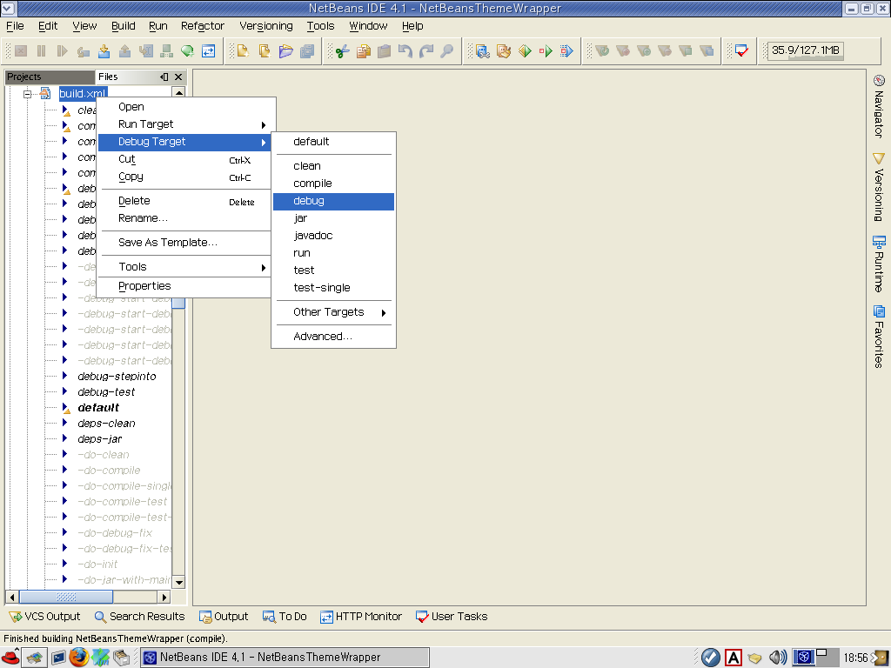
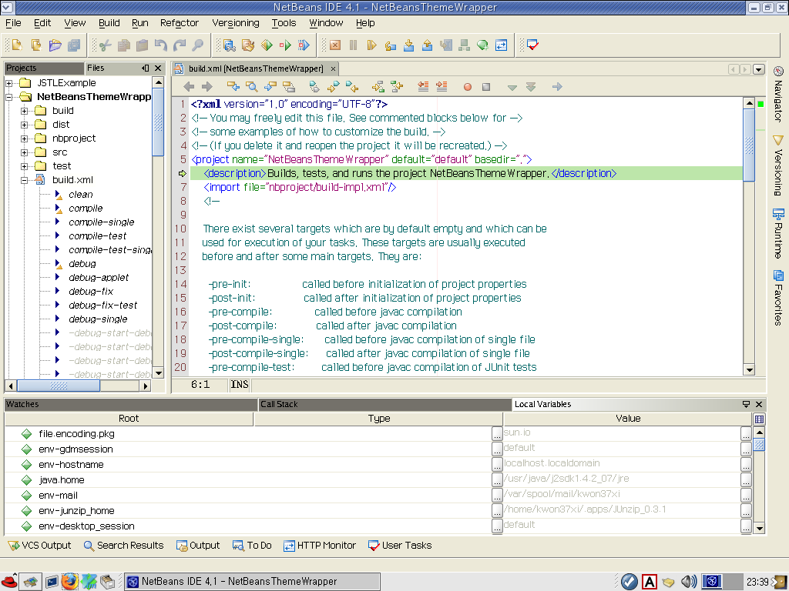
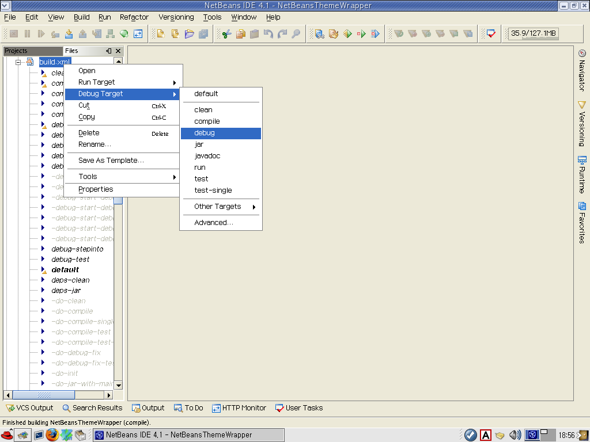

NetBeans 4.1 에서 Tools -> Update Center 를 통해 Ant Debugger 를 설치할 수 있다.
아래는 디버깅 화면이다.
그리고 아래는 디버깅을 시작하는 방법이다. 뭐 간단하지만..

아직 제대로 써보진 않았는데, 아무튼 그런게 있다..
근데.. 이거 필요할까?? ^^;
아래는 디버깅 화면이다.
그리고 아래는 디버깅을 시작하는 방법이다. 뭐 간단하지만..

아직 제대로 써보진 않았는데, 아무튼 그런게 있다..
근데.. 이거 필요할까?? ^^;